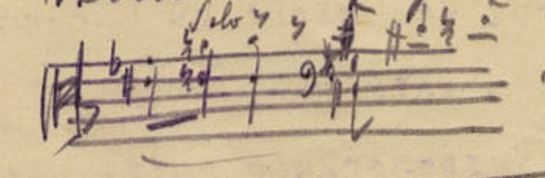
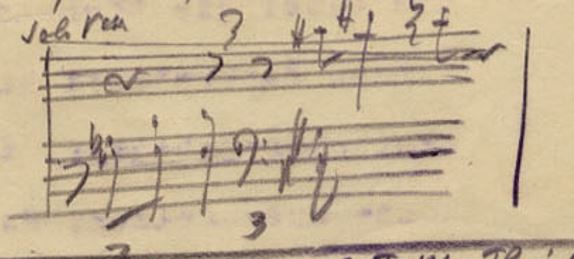
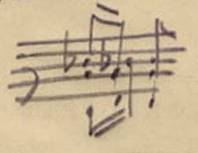
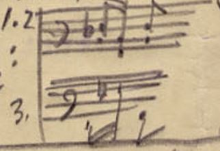
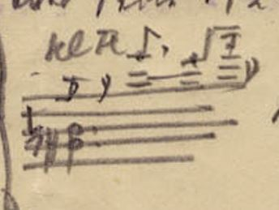
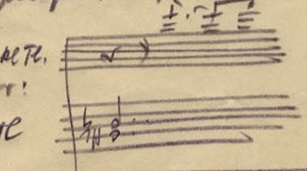

msDesc: Washington, D.C. The Library of Congress Music Division Arnold Schoenberg Collection Wien Arnold Schönberg Center ASCC ID 23854
correspDesc: JohannesGeidel F. M. Geidel Leipzig Universal-Edition Wien Dokument enthält auch den Antwortbrief von Arnold Schönberg an F. M. Geidel, 6. Juni 1914 Brief vom 6. Juni 1914 Brief vom 14. Mai 1914
F. M. GEIDEL, LEIPZIG
Anstalt für
Notenstich,
Notendruck und Anastatischen Druck
Stein- und Buchdruckerei, Notensatz,
Stereotype
Lithographie, Autographie und Buchbinderei
Fernsprecher
36 ···· Bank-Konto: Frege & Co
Leipzig
Wittenbergerstraße 23
Mit gleicher Post übersende ich Ihnen
2 Abzüge einer Pro-
beseite
1
aus der Orchesterpartitur Schönberg. Ich
hoffe, alles nach Wunsch
des Autors ausgeführt zu haben und bitte um recht
baldigen Bescheid, da-
mit ich weiter
arbeiten lassen kann.
Ich möchte hierzu noch bemerken, dass die Einteilung des
Manuskriptes es
mit sich bringt, dass ich gezwungen bin, ab und
zu verhältnismässig
wenig Linien auf eine Platte zu bringen, um
unmittelbar im Anschluss daran
wieder eine Platte mit Doppelsystemen
einrichten zu können.
Ich bitte,
beim Autor anzufragen, 1. XXob in diesem Falle bei geeigneten Instrumenten, wo im
Manuskript mehrere auf eine Linie zusammen
gezogen sind, ein Auseinander-
ziehen in
einzelnen Instrumenten vorgenommen werden kann, um zu vermeiden,
dass
plötzlich auf eine sehr enge Platte mit 34 Linien eine sehr weite
mit 18
oder 20 Linien folgt. Umgedreht macht es sich notwendig, in ein-
zelnen Fällen,
2. X
X dass 2 gleichartige
Instrumentenlinien auf eine Linie zu-
sammengezogen werden, um eine 2systemige Platte einrichten zu können
und
dabei die Höchstzahl der Linien, 34, nicht zu überschreiten. Einer
kurzen
Rückantwort hierüber sehe ich entgegen.
Beethoven-Schenker.
Korrektur der Vorbemerkung hoffe ich im Laufe dieser
Woche auszusetzen;
durch die vielen Feiertage hat sich leider die Fertig-
stellung dieser Arbeit etwas verzögert.
ppa. F. M. Geidel
Warum wurde
kein breiteres Papier genommen?
Ich schrieb doch deswegen auch!!!
2
Ich habe geglaubt, Ihre Fragen deutlich und klar beantwortet zu
haben. Nun
sehe ich mit Bedauern, dass Sie meine ausführlichen
Auseinandersetzungen
nicht genügend beachtet haben.
Ich schrieb wörtlich:
„Es ist gar kein Unglück, sieht
auch besser aus und ist
lesbarer, wenn auf einer einsystemigen Platte nur
24 cm der
Höhe bedruckt sind, als wenn Ueberflüssiges dort steht.
Die
Partituren dienen einzig und allein praktischen
Zwecken und je besser sie denen entsprechen, desto schöner
sind sie.
Jede andere Schönheit ist Mumpitz.“
Ich habe geglaubt, dass dieser Hinweis:
Lesbarkeit
= Schönheit
von Ihnen zur Kenntnis genommen werden wird.
Ich habe gedacht, Sie werden einsehen, dass die
Partituren
für die Dirigenten und Musiker
sind
und dass man denen die Mühe der Entzifferung
so weit wie möglich
zu erleichtern hat !!!
1 Deshalb ist es also durchaus nicht an-
gebracht, durchaus
falsch, 2 Stimmen die auf
einer Zeile
stehen können, auf 2 zu stechen !!
Insbesondere, da meist die Akkorde
leichter zu lesen
sind, wenn möglichst viel davon (2 - 3 Töne) in einer
Zeile stehen.
Eine Ausnahme davon machen natürlich
Zeilen, in denen zwei rhytmisch verschiedene
Stimmen stehen z Bsp :
Seite 3, Vcll , 2
Takt:

das ist besser als
2 Zeilen:

oder: Seite 3: Takt 2, Flöten

besser:

oder Seite 4, 2. System, 3. Takt, Fl u Pic

besser:

aber Seite 8, 1. System, 4. Takt Solo B r
besser in 2 Zeilen (eventuell !!)
dagegen sind folgende Stellen besser in einer Zeile als in 2:
Seite 6, Takt 5, die
Br
Viola
; | Seite 7, Takt 3, die
Clar.
Klarinette
und die Fag. |
Seite 5, 1. System, Takt 1 die
Ktrbsse
| Seite 9, 2. Syst, 6.
Takt, Ob und
Klar
2. Zusammenziehungen nur bei Instrumenten der gleichen
Gattung, die die
gleiche Notierung haben !!!